fuzzy-decision · vision mode · 2026-09-30
Qwen3-VL-4B-Instruct on generated pictures
19 / 28 68%
Each picture is 320×320 RGB. Options are scored by how likely the model is to write that phrase. Confidence is the probability of the phrase it picked. Pictures were generated for this run. Loading the checkpoint took 11.9s for the subject set and 12.0s for the judgment set. Scoring itself was 236s across 28 questions.
Subject
Twelve generated pictures, one shared list of twelve labels. 12 of 12. Mean time 11.0s per picture, after the model was already loaded.
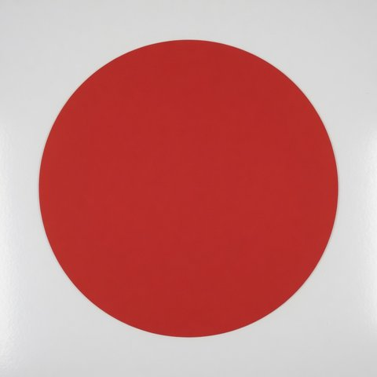
What is the main subject? Answer with one of the options.
hit · 11.2s · 99.0% on “a red circle”
Labeled answer: a red circle
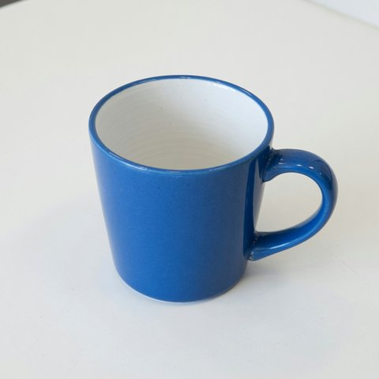
What is the main subject? Answer with one of the options.
hit · 11.0s · 98.1% on “a blue coffee mug”
Labeled answer: a blue coffee mug
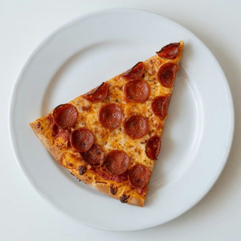
What is the main subject? Answer with one of the options.
hit · 10.9s · 99.7% on “a slice of pizza”
Labeled answer: a slice of pizza
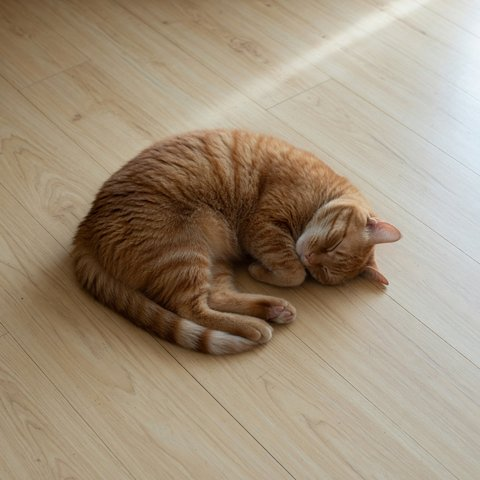
What is the main subject? Answer with one of the options.
hit · 10.9s · 73.0% on “a sleeping cat”
Labeled answer: a sleeping cat
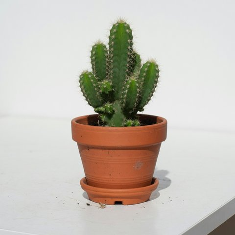
What is the main subject? Answer with one of the options.
hit · 10.9s · 99.7% on “a potted cactus”
Labeled answer: a potted cactus
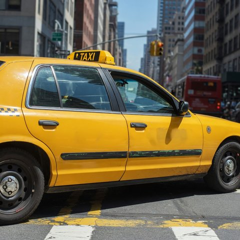
What is the main subject? Answer with one of the options.
hit · 10.9s · 96.1% on “a yellow taxi”
Labeled answer: a yellow taxi
What is the main subject? Answer with one of the options.
hit · 11.0s · 94.8% on “a piano keyboard”
Labeled answer: a piano keyboard
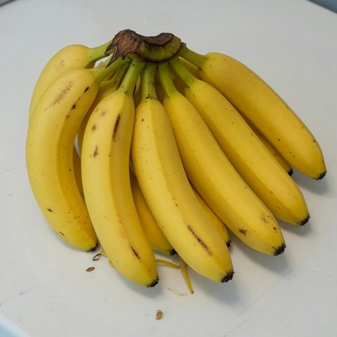
What is the main subject? Answer with one of the options.
hit · 10.9s · 98.6% on “a bunch of bananas”
Labeled answer: a bunch of bananas
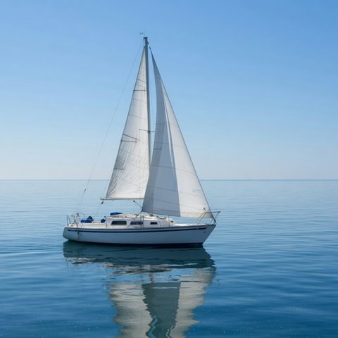
What is the main subject? Answer with one of the options.
hit · 10.9s · 98.7% on “a sailboat”
Labeled answer: a sailboat
What is the main subject? Answer with one of the options.
hit · 10.9s · 71.3% on “an airplane”
Labeled answer: an airplane
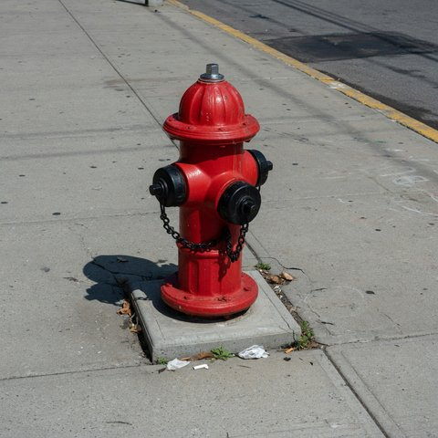
What is the main subject? Answer with one of the options.
hit · 10.9s · 98.7% on “a fire hydrant”
Labeled answer: a fire hydrant
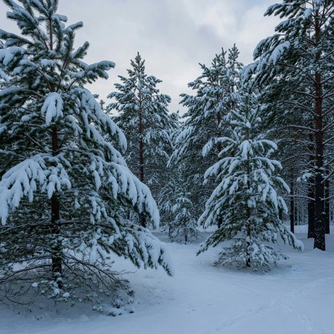
What is the main subject? Answer with one of the options.
hit · 10.9s · 97.4% on “a snowy forest”
Labeled answer: a snowy forest
Danger
Name the danger in the picture. 3 of 4. Mean time 4.2s per picture, after the model was already loaded.
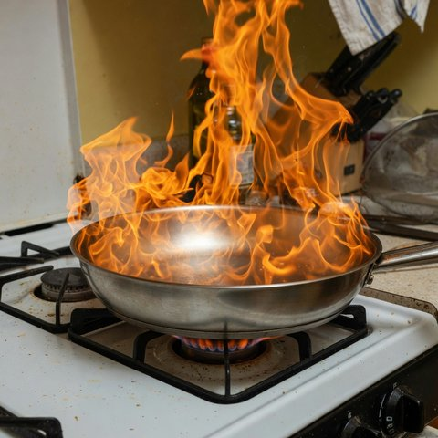
What is the danger in this scene?
hit · 4.3s · 86.8% on “a grease fire on the stove”
Labeled answer: a grease fire on the stove
a grease fire on the stove86.8%
broken glass on the floor12.3%
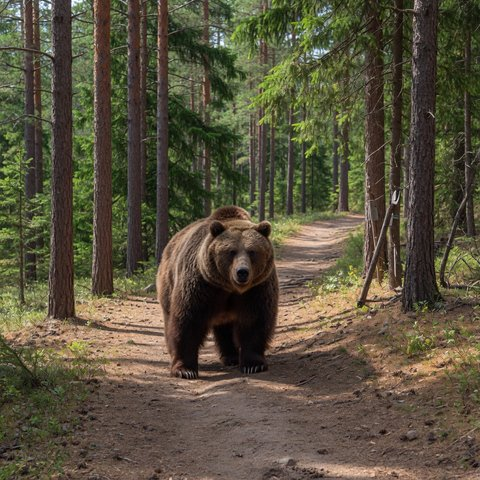
What is the danger in this scene?
hit · 4.2s · 82.5% on “a bear on the trail”
Labeled answer: a bear on the trail
broken glass on the floor14.5%
a grease fire on the stove3.0%
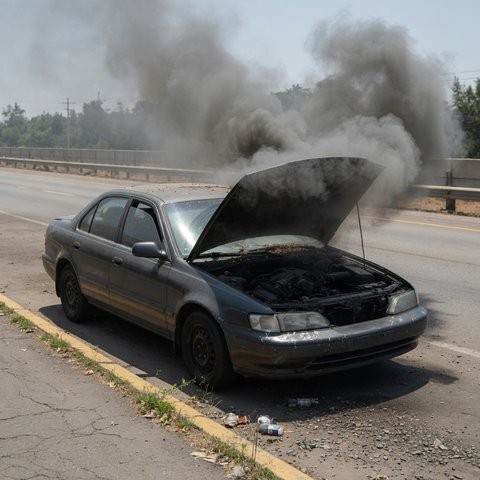
What is the danger in this scene?
miss · 4.2s · 52.6% on “broken glass on the floor”
Labeled answer: a smoking car
broken glass on the floor52.6%
a grease fire on the stove30.2%
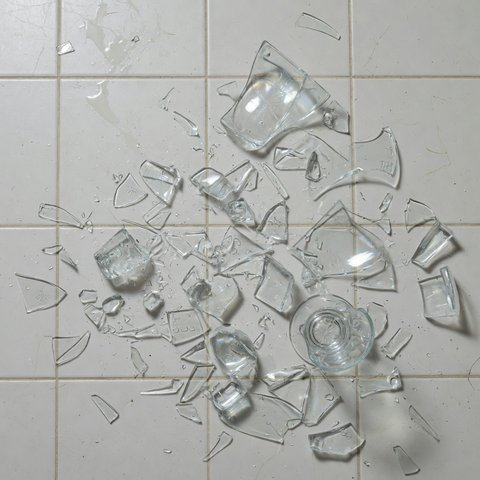
What is the danger in this scene?
hit · 4.2s · 92.1% on “broken glass on the floor”
Labeled answer: broken glass on the floor
broken glass on the floor92.1%
a grease fire on the stove7.3%
Emotion
Name the emotion on the face. 2 of 4. Mean time 3.2s per picture, after the model was already loaded.
What emotion is this person showing?
hit · 3.3s · 93.9% on “sadness”
Labeled answer: sadness
What emotion is this person showing?
miss · 3.2s · 62.8% on “fear”
Labeled answer: joy
What emotion is this person showing?
hit · 3.2s · 54.0% on “fear”
Labeled answer: fear
What emotion is this person showing?
miss · 3.2s · 85.4% on “sadness”
Labeled answer: anger
Action
Pick the first thing someone should do. Eight actions, one list. 2 of 8. Mean time 9.3s per picture, after the model was already loaded.
What should someone do first?
hit · 9.4s · 83.0% on “turn off the burner and cover the pan”
Labeled answer: turn off the burner and cover the pan
turn off the burner and cover the pan83.0%
unplug the laptop and shut it down8.9%
put the fire out before it reaches the tent5.0%
sweep up the glass before walking through2.0%
back away and give the animal space0.5%
walk the bicycle instead of riding it0.4%
get away from the car0.2%
What should someone do first?
miss · 9.3s · 65.0% on “unplug the laptop and shut it down”
Labeled answer: back away and give the animal space
unplug the laptop and shut it down65.0%
sweep up the glass before walking through13.1%
back away and give the animal space8.0%
put the fire out before it reaches the tent7.0%
turn off the burner and cover the pan5.0%
walk the bicycle instead of riding it1.8%
get away from the car0.2%
What should someone do first?
miss · 9.2s · 52.1% on “unplug the laptop and shut it down”
Labeled answer: get away from the car
unplug the laptop and shut it down52.1%
get away from the car32.2%
sweep up the glass before walking through7.3%
put the fire out before it reaches the tent4.4%
turn off the burner and cover the pan2.2%
walk the bicycle instead of riding it1.0%
back away and give the animal space0.8%
What should someone do first?
miss · 9.2s · 62.7% on “unplug the laptop and shut it down”
Labeled answer: sweep up the glass before walking through
unplug the laptop and shut it down62.7%
sweep up the glass before walking through23.0%
turn off the burner and cover the pan8.3%
back away and give the animal space2.1%
put the fire out before it reaches the tent1.9%
walk the bicycle instead of riding it1.5%
get away from the car0.5%
What should someone do first?
hit · 9.2s · 92.9% on “unplug the laptop and shut it down”
Labeled answer: unplug the laptop and shut it down
unplug the laptop and shut it down92.9%
sweep up the glass before walking through3.3%
turn off the burner and cover the pan1.4%
put the fire out before it reaches the tent1.2%
walk the bicycle instead of riding it0.6%
back away and give the animal space0.5%
get away from the car0.1%
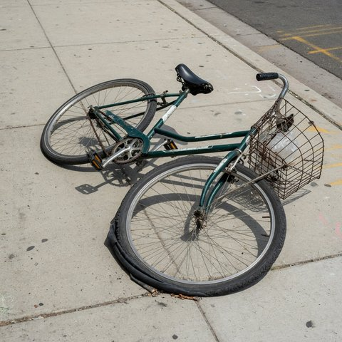
What should someone do first?
miss · 9.3s · 63.7% on “unplug the laptop and shut it down”
Labeled answer: walk the bicycle instead of riding it
unplug the laptop and shut it down63.7%
walk the bicycle instead of riding it10.3%
turn off the burner and cover the pan10.2%
sweep up the glass before walking through9.7%
get away from the car2.6%
put the fire out before it reaches the tent1.8%
back away and give the animal space1.8%
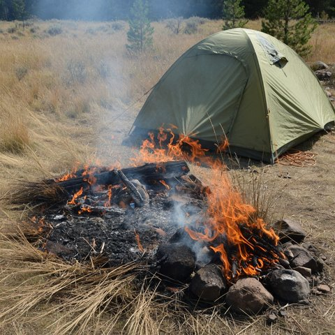
What should someone do first?
miss · 9.3s · 60.6% on “unplug the laptop and shut it down”
Labeled answer: put the fire out before it reaches the tent
unplug the laptop and shut it down60.6%
put the fire out before it reaches the tent30.2%
sweep up the glass before walking through4.2%
turn off the burner and cover the pan3.2%
back away and give the animal space0.8%
walk the bicycle instead of riding it0.7%
get away from the car0.3%
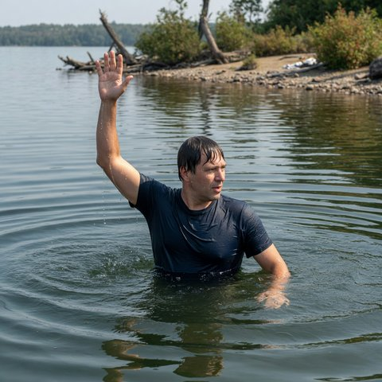
What should someone do first?
miss · 9.3s · 54.9% on “unplug the laptop and shut it down”
Labeled answer: wave back
unplug the laptop and shut it down54.9%
turn off the burner and cover the pan20.7%
sweep up the glass before walking through10.5%
put the fire out before it reaches the tent6.7%
back away and give the animal space3.6%
walk the bicycle instead of riding it2.7%
get away from the car0.9%